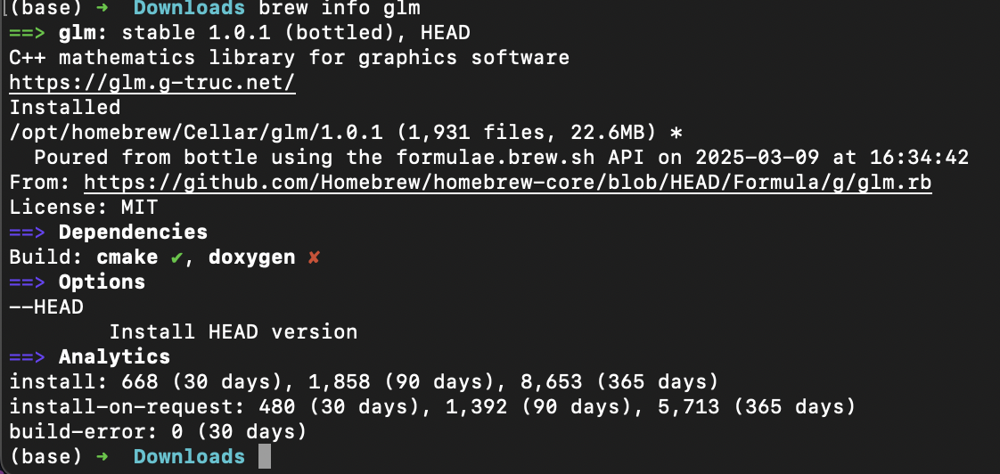
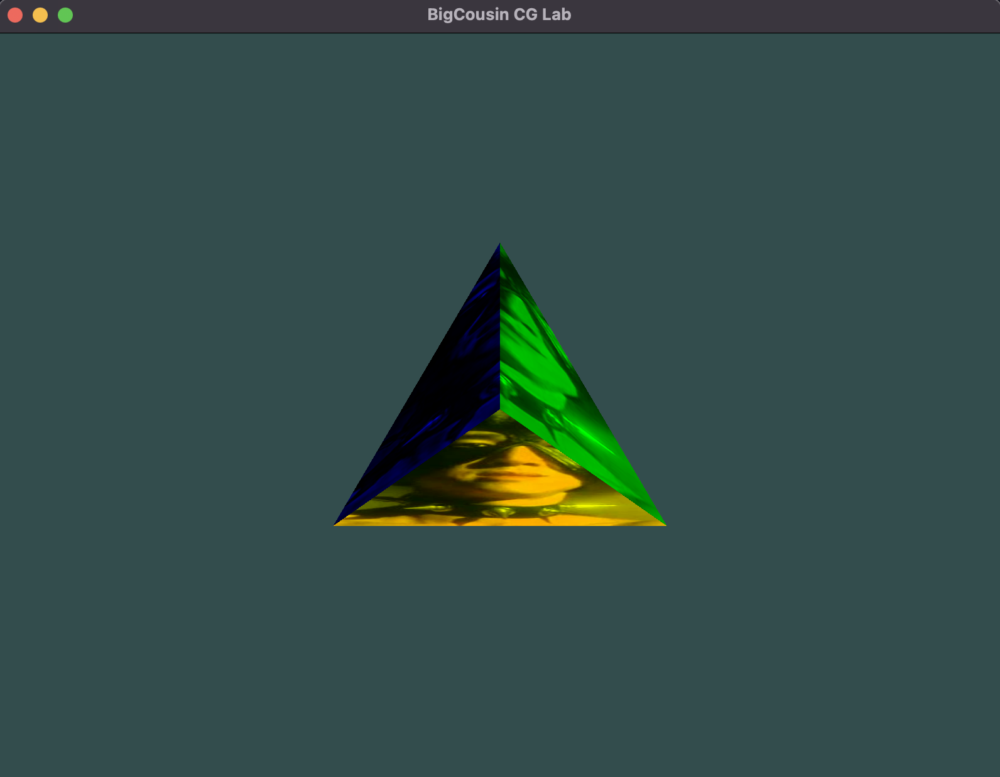
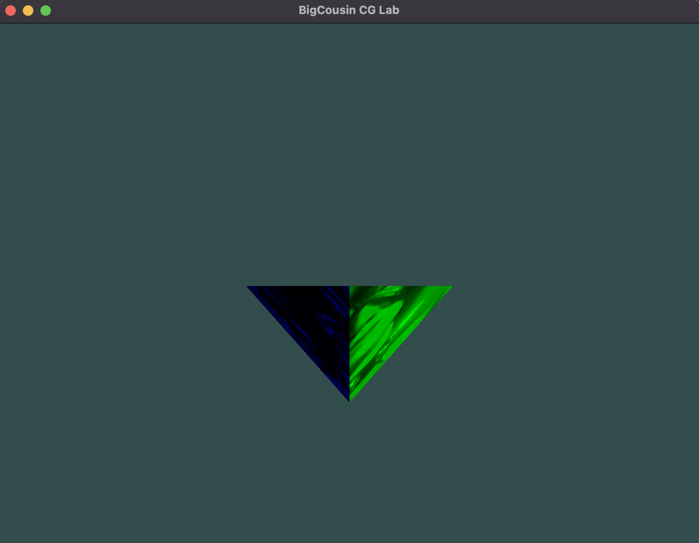

CG Lab2
姓名：刘尚
学号：202211010058
代码仓库：Github
环境配置
系统环境
- MacOS
- 处理器架构：ARM64（Apple Silicon）
- 编译器: Clang（Apple Clang 15.0.0）
GLM 配置
项目整体配置沿用实验一的配置，项目的修改在是在实验一的基础上进行的。
只需要额外进行GLM的配置即可。
我们使用 MacOS 的brew包管理器进行GLM的安装。
brew install glm
确认GLM的安装是否成功。

brew info glm
确认GLM安装成功后，我们可以在CMakeLists.txt中添加GLM的配置。
以下是CMakeLists.txt中GLM的配置。
include_directories(/opt/homebrew/include)
说明：/opt/homebrew/include是brew安装GLM的默认路径，同时也是GLM的头文件路径。
``GLM`的使用
再进一步实验之前，我们有必要简单了解一下GLM的使用。
主要是GLM的基本数据结构和使用方法，尤其是各种线性代数的操作。
基本数据结构
vec2：二维向量vec3：三维向量vec4：四维向量mat2：二维矩阵mat3：三维矩阵mat4：四维矩阵
基本操作
- 矩阵与向量的加减乘除等基本运算
- 各种几何线性变换
- 旋转：
glm::rotate - 缩放：
glm::scale - 平移：
glm::translate - 投影：
glm::perspective
- 旋转：
任务实现
接下来先观察每个任务的要求，分析实现思路，最后给出最终实现全部任务后的代码讲解。
- 任务 1：在实验一中任务 2/3 的基础上，对于带颜色或纹理的自定义立方体，通过旋转操作展示其三视图（主视图、俯视图、左视图）
- 任务 2：在任务 1 的基础上，展示有透视投影效果的立方体三视图
- 任务 3：在任务 2 的基础上，增加深度测试，展示更具有真实感的立方体三视图
任务 1
根据 LearnOpenGL 中的教程，我们可以通过旋转操作展示立方体的三视图。
这分为两个任务：
- 计算出三种旋转操作的旋转矩阵
- 在渲染循环中，分别应用这三种旋转矩阵
计算旋转矩阵
对我们的模型进行各种变换基于各种线性变换，包括下面的方面
- 模型本身的变换
- 摄像机的变换
- 透视投影的变换
计算旋转矩阵主要通过glm::rotate函数实现，作用于一个单位矩阵上。
我们通过先声明一个单位矩阵model，表示对模型本身的所有变换。
声明一个单位矩阵view，表示摄像机的变换。
声明一个单位矩阵projection，表示透视投影的变换。
任务一我们主要是对模型本身的变换，所以我们只需要计算模型的旋转矩阵即可。
glm::mat4 model = glm::mat4(1.0f);
model = glm::scale(model, glm::vec3(1.1, 1.1, 1.1));
如果要展示主视图，不需要进行旋转，直接渲染就行，可以省略这一步。

如果要展示俯视图，需要绕 x 轴旋转 90 度。
model = glm::rotate(model, glm::radians(90.0f), glm::vec3(1.0f, 0.0f, 0.0f));

如果要展示左视图，需要绕 y 轴旋转 90 度。
model = glm::rotate(model, glm::radians(90.0f), glm::vec3(0.0f, 1.0f, 0.0f));

应用旋转矩阵
在渲染循环中，我们需要分别应用这三种旋转矩阵。那么如何实现呢？
主要思路是把三种旋转矩阵发送给顶点着色器，然后再着色器中应用即可，这里的直接通过uniform变量传递。
glUniformMatrix4fv(transformLoc, 1, GL_FALSE, glm::value_ptr(trans));
然后我们继续改进实验一里的顶点着色器，增加一个uniform变量，用于接收旋转矩阵。
#version 330 core
layout (location = 0) in vec3 aPos;
layout (location = 1) in vec3 aColor;
layout (location = 2) in vec2 aTexCoord;
flat out vec3 faceColor;
out vec2 texCoord;
uniform mat4 transform;
void main() {
gl_Position = transform * vec4(aPos, 1.0f);
faceColor = aColor;
texCoord = aTexCoord;
}
任务 2
在 3D 渲染中，透视投影（Perspective Projection）通过视锥体（Frustum）来定义一个可视区域，物体会随着距离的增加而缩小，模拟真实世界的透视效果。
透视投影由以下四个参数控制：
-
fovy（视场角，Field of View, FOV）：
- 控制相机的垂直视角，单位是弧度。
- 例如，45° 视角表示较为常见的广角视野。
-
aspect（宽高比，Aspect Ratio）：
- 计算方式：
aspect = 窗口宽度 / 窗口高度 - 作用：防止物体变形（避免拉伸或压缩）。
- 计算方式：
-
zNear（近裁剪面，Near Plane）：
- 定义最靠近相机的可见距离，小于 zNear 的物体不会被渲染。
-
zFar（远裁剪面，Far Plane）：
- 定义最远的可见距离，超过 zFar 的物体会被裁剪。
在任务 1 的基础上，我们需要展示有透视投影效果的立方体三视图。
根据课程内容以及 LearnOpenGL 的教程，我们可以通过glm::perspective函数实现透视投影。
本质是通过透视投影矩阵将立方体的三视图投影到屏幕上,再添加一层线性变换。
- 定义最远的可见距离，超过 zFar 的物体会被裁剪。
透视投影矩阵的计算公式：
glm::mat4 projection = glm::perspective(glm::radians(45.0f), (float)SCR_WIDTH / (float)SCR_HEIGHT, 0.1f, 100.0f);
glm::radians(45.0f): 转换 45° 视角 为弧度。
(float)SCR_WIDTH / (float)SCR_HEIGHT: 计算窗口的宽高比，防止图像变形。
0.1f, 100.0f: 设置 近裁剪面（0.1）和远裁剪面（100）。
任务 3
根据 LearnOpenGL 的教程，我们可以通过深度测试来展示更具有真实感的立方体三视图。
只需在渲染循环中启用深度测试即可。
glEnable(GL_DEPTH_TEST);
当启用了 GL_DEPTH_TEST，OpenGL 在渲染每个像素时会进行以下流程：
-
获取片段的深度值（Z 值）。
-
读取当前深度缓冲区中存储的深度值。
-
使用
glDepthFunc()设定的规则进行比较： -
如果通过深度测试：
-
更新该像素的颜色（Color Buffer）。
-
更新该像素的深度值（Depth Buffer）。
-
-
如果不通过深度测试：
- 丢弃该像素，不修改颜色和深度缓冲区。
效果展示
完整的代码见代码仓库的archive/lab2.cpp
三视图效果如下
让模型动起来
如果在旋转操作的基础上，通过时间来计算旋转角度，就可以实现动态旋转的效果。
把主渲染循环改成如下形式：
while (!glfwWindowShouldClose(window))
{
processInput(window);
glClearColor(0.2f, 0.3f, 0.3f, 1.0f);
glClear(GL_COLOR_BUFFER_BIT | GL_DEPTH_BUFFER_BIT);
float timeValue = glfwGetTime();
float angle = timeValue * glm::radians(50.0f);
glm::mat4 model = glm::mat4(1.0f);
model = glm::rotate(model, angle, glm::vec3(0.0f, 1.0f, 0.0f));
model = glm::scale(model, glm::vec3(1.1, 1.1, 1.1));
glm::mat4 view = glm::lookAt(
glm::vec3(0.0f, 0.0f, 3.0f),
glm::vec3(0.0f, 0.0f, 0.0f),
glm::vec3(0.0f, 1.0f, 0.0f));
glm::mat4 projection = glm::perspective(glm::radians(45.0f), (float)SCR_WIDTH / (float)SCR_HEIGHT, 0.1f, 100.0f);
glm::mat4 trans = projection * view * model;
shaderLoader.use();
glUniformMatrix4fv(transformLoc, 1, GL_FALSE, glm::value_ptr(trans));
glActiveTexture(GL_TEXTURE0);
glBindTexture(GL_TEXTURE_2D, texture);
glUniform1i(glGetUniformLocation(shaderProgram, "ourTexture"), 0);
glBindVertexArray(VAO);
glDrawArrays(GL_TRIANGLES, 0, 12);
glBindVertexArray(0);
glfwSwapBuffers(window);
glfwPollEvents();
}
下面是视频效果展示
相关代码见代码仓库的src/main.cpp
实验总结
在本次实验中，我们深入研究了 GLM（OpenGL Mathematics）的使用，并结合 OpenGL 实现了立方体的三视图展示。实验过程中，我们从基本数学变换到 3D 透视投影，再到深度测试的应用，逐步构建了一个更完整的 3D 渲染流程。以下是本次实验的总结：
-
GLM 线性代数操作
- 学习了 GLM 的基本数据结构（vec 和 mat 类型）。
- 了解了 GLM 提供的线性变换函数，如：
- 旋转（
glm::rotate） - 缩放（
glm::scale） - 平移（
glm::translate） - 投影（
glm::perspective）
- 旋转（
-
变换矩阵的作用
- 模型变换（Model Matrix）：定义物体的旋转、缩放、平移，用于调整物体在 3D 空间中的位置。
- 观察变换（View Matrix）：模拟摄像机的视角，决定我们从哪个角度观察场景。
- 投影变换（Projection Matrix）：将 3D 场景映射到 2D 屏幕，包含透视投影（Perspective Projection）和正交投影（Orthographic Projection）。
-
深度测试的实现
- 通过
glEnable(GL_DEPTH_TEST)启用深度测试，保证遮挡关系正确，防止后绘制的物体错误覆盖前面物体。 - 了解了深度缓冲区（Depth Buffer）的作用：
- 清除缓冲区（
glClear(GL_DEPTH_BUFFER_BIT)）
- 清除缓冲区（
- 通过